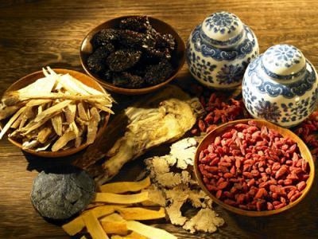
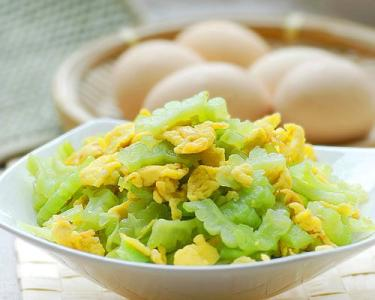

WonderCNF
WonderCNF
The food of flavor bitter
Bitter is the latest taste that people feel. The most sensitive part of biiter on our tongue is at the end of the tongue. In Chinese traditional medicine, some bitter herbs good effects. Also, these herbs can be used to cook medicated diet.

The first dish is:
Chinese caterpillar fungus nourishing soup
Chinese caterpillar fungus nourishing soup is good for health. The main materials are chicken and Chinese caterpillar fungus flowers.

The second dish is:
Fired bitter gourd and egg
Fired bitter gourd and egg is a common home cooking in China,. It has the effect of clearing away heat and toxic materials and increase appetite and digestion.